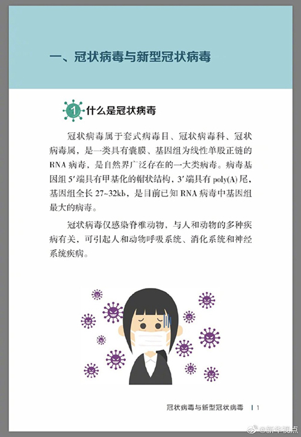
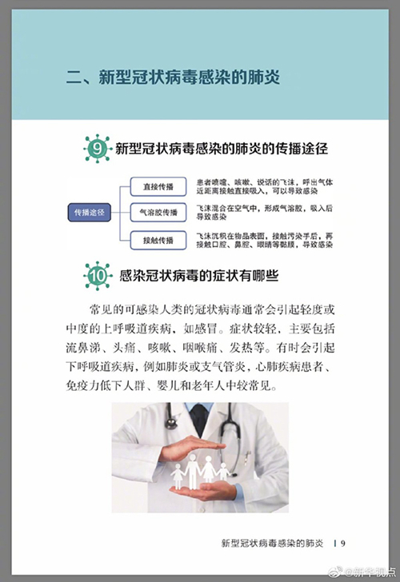
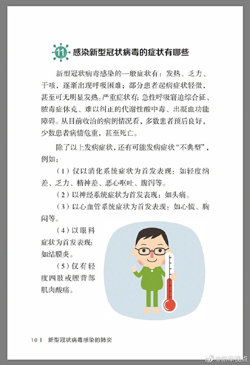
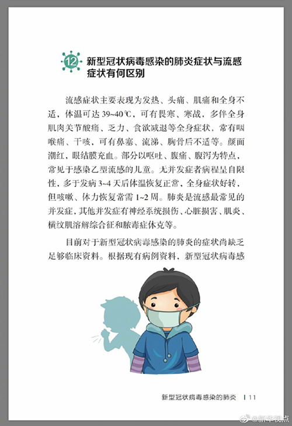
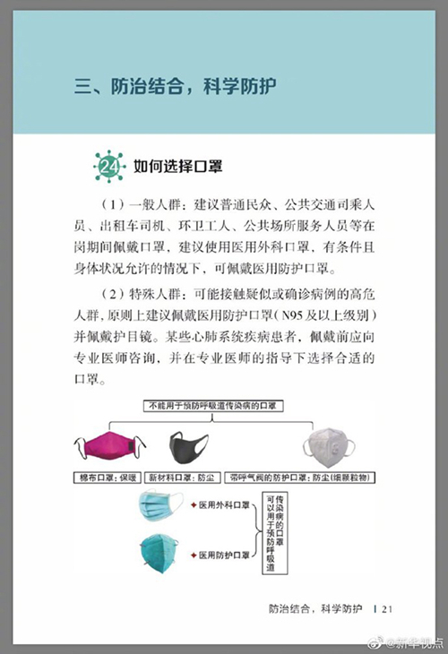
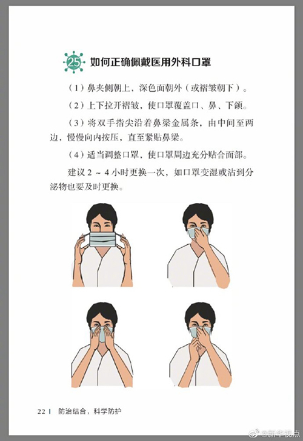
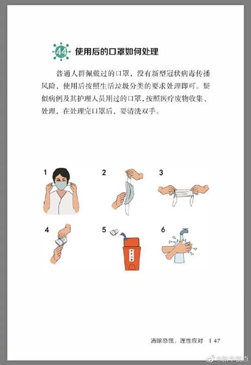
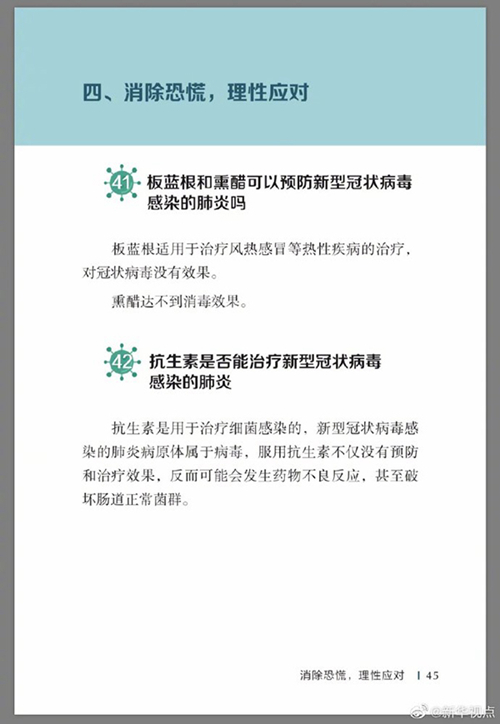

中国疾病预防控制中心编写的《新型冠状病毒感染的肺炎公众防护指南》，日前出版发行。此书聚焦公众个人与家庭防护、居家医学观察、理性就医、心理疏导等防治细节，通过问答形式解读新型冠状病毒感染的肺炎有关问题疑惑，引导公众正确认识，积极做到防治结合、科学防护、消除恐慌、理性应对。此书包括图书、电子书、网络版读物等多种形式，第一批图书已紧急送往武汉抗击疫情第一线，电子书、网络版读物在学习强国、健康中国、人卫健康、掌阅等多个网络平台、微信公众号公益传播，并为全国各地提供可印制的PDF版本。（图片来自《新型冠状病毒感染的肺炎公众防护指南》）







